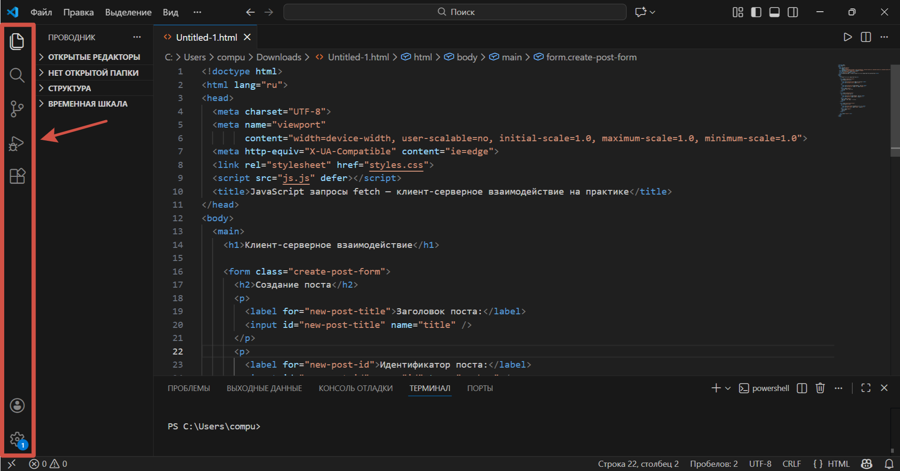
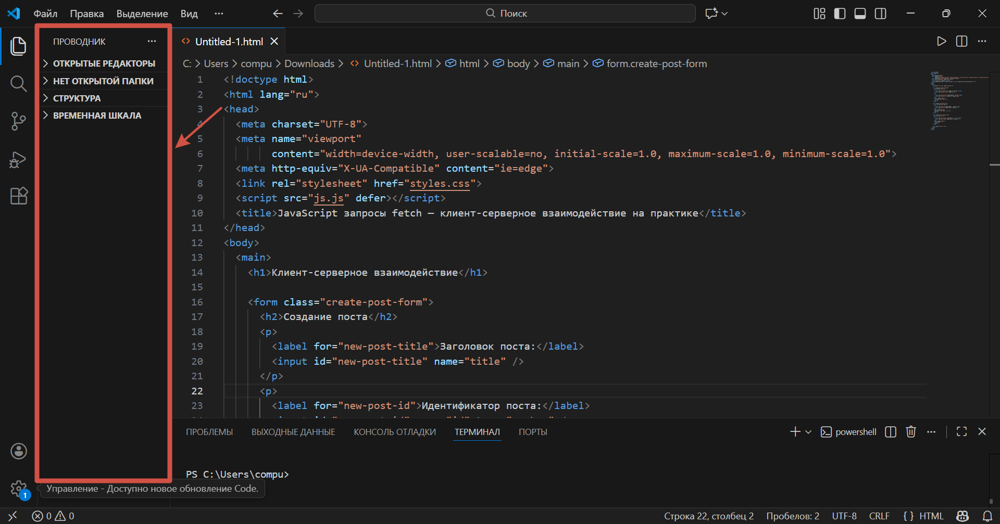
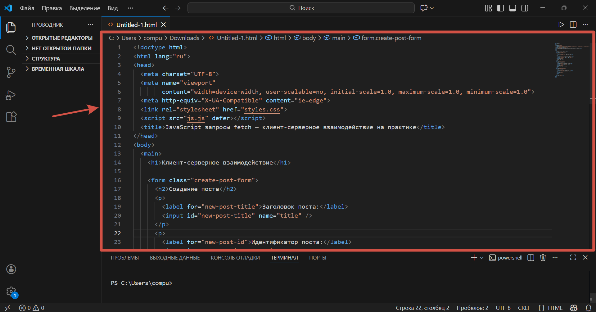
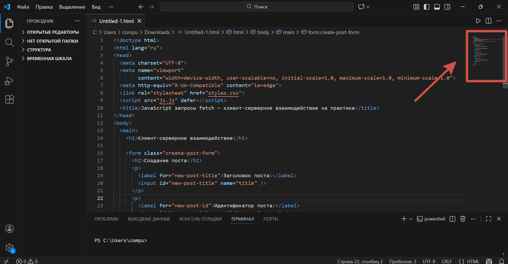
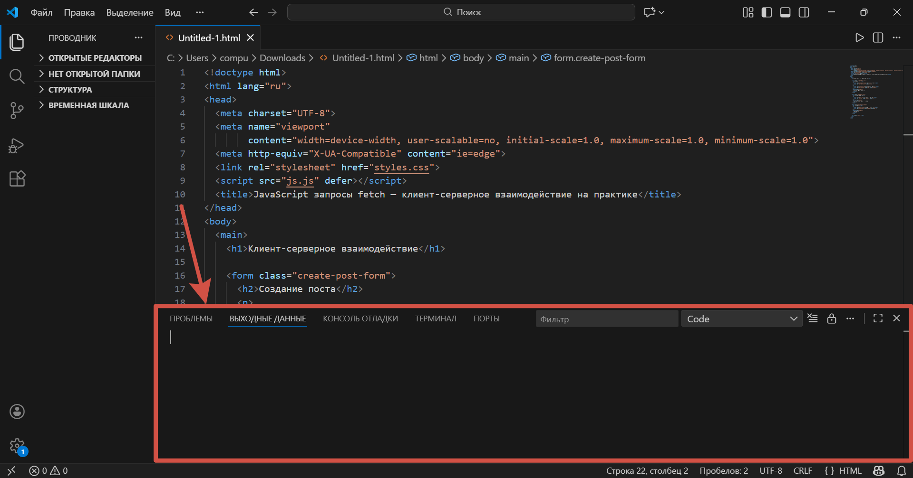
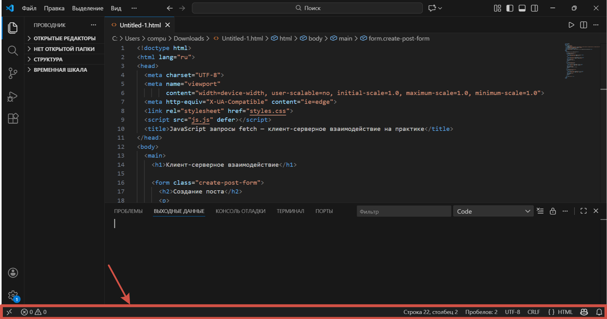
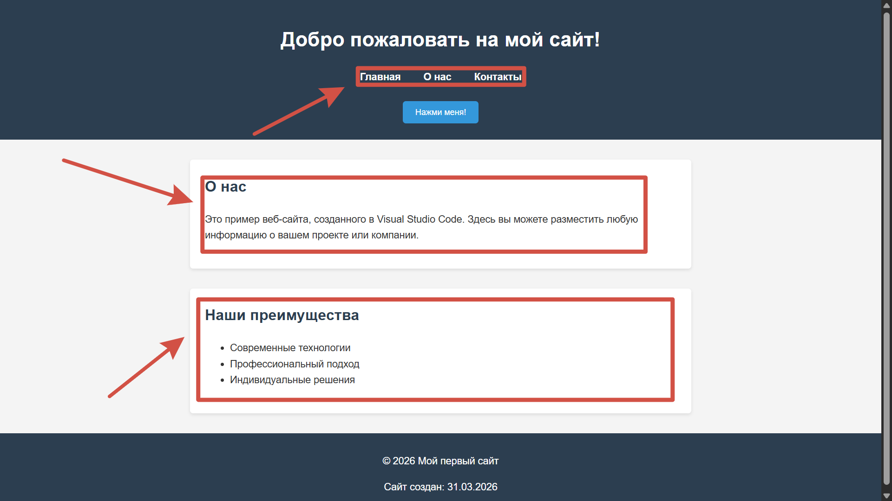
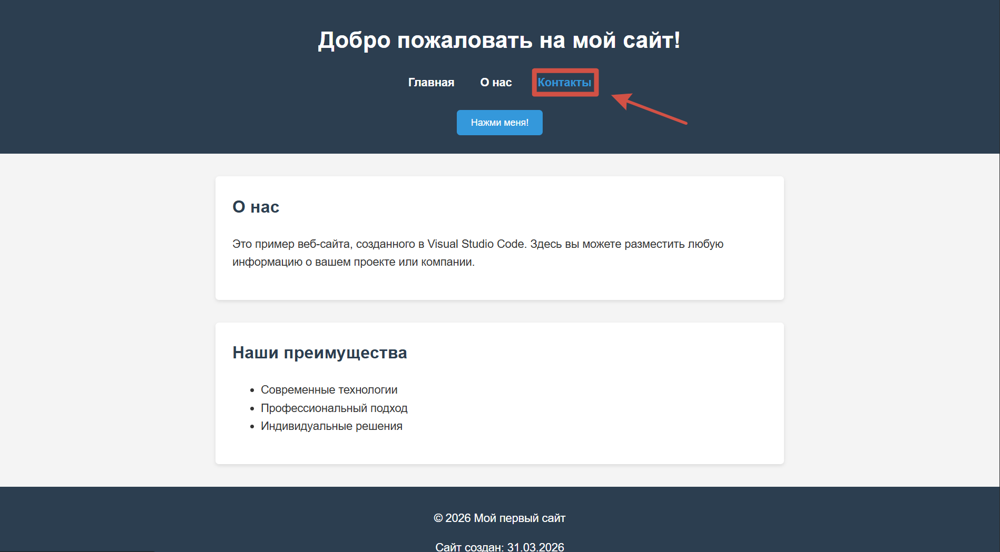
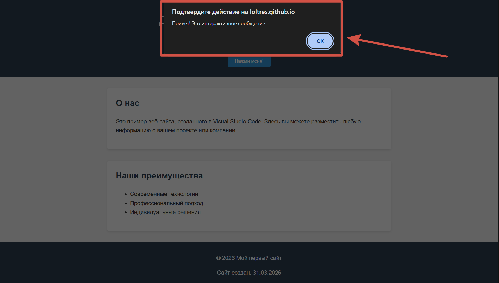
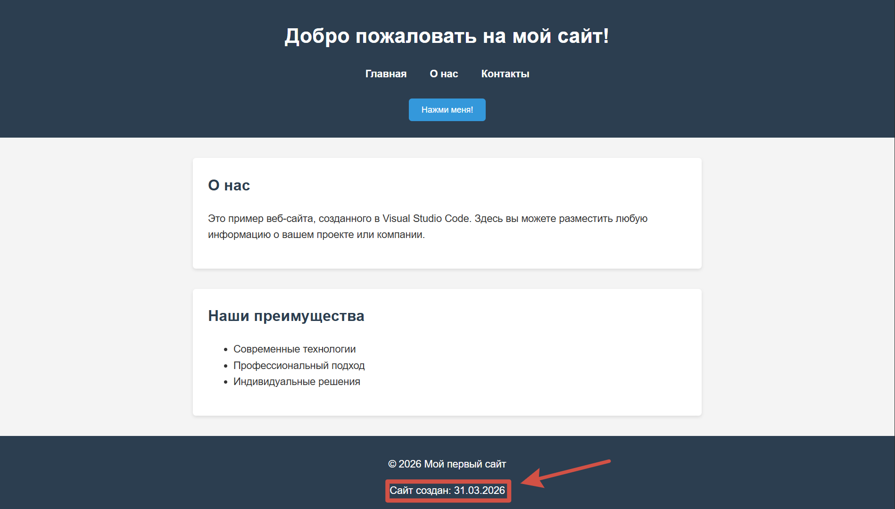

Введение & актуальность
Спроектировать и разработать интерактивный веб-сайт в профессиональной среде Visual Studio Code, изучив процесс создания адаптивного и функционального ресурса.
В современном мире информационных технологий наличие профессиональных навыков разработки веб-сайтов становится необходимым для бизнеса и индивидуальных специалистов. Платформа Visual Studio Code — один из самых популярных и мощных инструментов среди веб-разработчиков. Освоение и внедрение методов работы с этой средой повышает производительность, облегчает выполнение сложных задач и способствует профессиональному росту разработчиков.
Вопросы разработки веб-сайтов на платформе Visual Studio Code широко изучены в учебной и профессиональной литературе. Однако многие пользователи сталкиваются с трудностями при создании комплексных и адаптивных веб-проектов.
🎯 Цель проекта
Изучить разработку веб-сайтов на платформе Visual Studio Code.
📌 Задачи
- Выяснить роль веб-сайтов в различных сферах и способы обучения.
- Изучить интерфейс VS Code.
- Изучить процесс создания веб-сайта на платформе Visual Studio Code
🌐 Для чего нужны веб-сайты?
В современном мире сложно представить успешную деятельность без присутствия в интернете. Веб-сайты перестали быть просто «визитными карточками» и превратились в мощные инструменты, решающие конкретные задачи в разных областях. Рассмотрим основные сферы применения веб-сайтов на конкретных примерах.
Интернет-магазины (Amazon, Wildberries, Ozon), корпоративные порталы (Siemens, Shell). Сайт — центр привлечения клиентов.
Стриминговые сервисы (Netflix, Rutube, PREMIER): миллионы пользователей одновременно.
Поисковые системы и экосистемы (Яндекс, Google): почта, карты, облака, музыка.
Интернет-банкинг (Сбербанк, Госуслуги) — высокая доступность для миллионов граждан.
Образовательные платформы (Синергия, Учи.ру, Фоксфорд, Skyeng) — многомиллиардные компании.
📖 Где учиться разработке веб-сайтов
Освоение веб-разработки доступно каждому школьнику — существует множество способов получить знания: от самостоятельного изучения по книгам до обучения в колледже с получением диплома. Рассмотрим основные варианты, актуальные в 2026 году.
📚 Книги для самостоятельного изучения
Книги остаются надежным источником системных знаний. Для начинающего веб-разработчика существуют специальные издания, ориентированные на школьников и студентов. Они включают теорию, практические задания и дополнительные электронные материалы. Для занятий нужен только компьютер и доступ в интернет для скачивания примеров кода.
▶️ Видеохостинги
Основной массив бесплатного контента. Здесь можно найти как отдельные уроки по конкретным технологиям, так и полные многочасовые курсы, структурированные как университетские программы.
Плюсы: огромный выбор, наглядность, возможность учиться у практикующих разработчиков.
Минусы: отсутствие контроля знаний, риск «прыгать» между темами без системы.
💻 Интерактивные образовательные платформы
Специализированные сайты, где обучение построено на написании кода прямо в браузере. Часто предлагают программы с последовательным прохождением тем, проверочными заданиями и итоговыми проектами для портфолио. Многие такие ресурсы выдают сертификаты о прохождении бесплатно.
Плюсы: структурированность, немедленная проверка кода.
Минусы: для продвинутых тем часто требуется платная подписка (хотя базу можно освоить бесплатно).
⚙️ Как пользоваться платформой Visual Studio Code
Visual Studio Code (VS Code) — это современный редактор кода, разработанный корпорацией Microsoft. Он популярен среди разработчиков благодаря своей гибкости, широкому набору функций и удобству использования. Рассмотрим основные этапы работы с этой платформой.
1. Установка Visual Studio Code
Первый шаг к началу работы — установка редактора. Для этого необходимо:
- Перейти на официальный сайт Visual Studio Code: code.visualstudio.com
- Выбрать версию для своей операционной системы (Windows, macOS или Linux) и скачать установочный файл
- Запустить скачанный файл и следовать инструкциям мастера установки
2. Настройка интерфейса и русификация
По умолчанию интерфейс VS Code отображается на английском языке. Чтобы сменить язык на русский, необходимо открыть палитру команд (Ctrl + Shift + P), ввести команду Configure Display Language, выбрать «Русский» и перезапустить редактор.
3. Обзор пользовательского интерфейса
Интерфейс Visual Studio Code состоит из нескольких основных элементов: панель активности, боковая панель, редактор, миникарта, панель терминала, строка состояния.






4. Установка расширений
Главная сила VS Code заключается в его расширяемости. Расширения добавляют поддержку новых языков программирования. Для установки расширений нужно нажать на значок «Расширения» или использовать сочетание Ctrl + Shift + X, ввести название и нажать «Install».
Рекомендуемые расширения для веб-разработки: Live Server, Prettier, HTML CSS Support, JavaScript (ES6) code snippets.
5. Горячие клавиши
Использование сочетаний клавиш значительно ускоряет работу в VS Code.
| Действие | Сочетание (Windows) | Сочетание (macOS) |
|---|---|---|
| Открыть палитру команд | Ctrl + Shift + P | Cmd + Shift + P |
| Открыть файл | Ctrl + O | Cmd + O |
| Создать новый файл | Ctrl + N | Cmd + N |
| Сохранить файл | Ctrl + S | Cmd + S |
| Поиск по файлам | Ctrl + P | Cmd + P |
| Открыть терминал | Ctrl + ` | Cmd + ` |
| Комментировать строку | Ctrl + / | Cmd + / |
| Форматировать документ | Shift + Alt + F | Shift + Option + F |
| Открыть настройки | Ctrl + , | Cmd + , |
💻 Создание веб-сайта на платформе Visual Studio Code
Visual Studio Code (VS Code) предоставляет все необходимые инструменты для создания веб-сайтов — от написания кода до предварительного просмотра в браузере. Рассмотрим, для чего нужны основные веб-технологии, и пошагово создадим простой, но полноценный веб-сайт, включающий HTML, CSS и JavaScript.
1. Для чего нужны HTML, CSS и JavaScript
HTML (HyperText Markup Language) — это язык разметки, который создает каркас веб-страницы. Определяет структуру страницы, размечает содержимое (заголовки, абзацы, списки, ссылки).
CSS (Cascading Style Sheets) — это язык стилей, который отвечает за визуальное оформление. Управляет цветами, шрифтами, размерами, расположением блоков.
JavaScript (JS) — это язык программирования, который делает страницу интерактивной: реагирует на клики, изменяет содержимое, управляет анимацией.
2. HTML-код (структура страницы) — файл index.html
<html lang="ru">
<head>
<meta charset="UTF-8">
<meta name="viewport" content="width=device-width, initial-scale=1.0">
<title>Мой первый сайт</title>
<link rel="stylesheet" href="style.css">
</head>
<body>
<header>
<h1>Добро пожаловать на мой сайт!</h1>
<nav>
<ul>
<li><a href="#">Главная</a></li>
<li><a href="#">О нас</a></li>
<li><a href="#">Контакты</a></li>
</ul>
</nav>
</header>
<main>
<section>
<h2>О нас</h2>
<p>Это пример веб-сайта, созданного в Visual Studio Code. Здесь вы можете разместить любую информацию о вашем проекте или компании.</p>
</section>
<section>
<h2>Наши преимущества</h2>
<ul>
<li>Современные технологии</li>
<li>Профессиональный подход</li>
<li>Индивидуальные решения</li>
</ul>
</section>
</main>
<footer>
<p>© 2026 Мой первый сайт</p>
</footer>
<script src="script.js"></script>
</body>
</html>
3. CSS-код (оформление) — файл style.css
header { background-color: #2c3e50; color: white; padding: 1rem; text-align: center; }
nav ul { list-style: none; padding: 0; }
nav ul li { display: inline; margin: 0 1rem; }
nav ul li a { color: white; text-decoration: none; font-weight: bold; }
nav ul li a:hover { color: #3498db; }
main { max-width: 800px; margin: 2rem auto; padding: 0 1rem; flex: 1; }
section { background: white; margin-bottom: 2rem; padding: 1.5rem; border-radius: 5px; box-shadow: 0 2px 5px rgba(0,0,0,0.1); }
section h2 { color: #2c3e50; margin-top: 0; }
footer { background-color: #2c3e50; color: white; text-align: center; padding: 1rem; }
@media (max-width: 576px) {
main { margin: 0.5rem; padding: 0; }
section { padding: 0.8rem; margin-bottom: 1rem; border-radius: 0; }
header h1 { font-size: 1.2rem; }
nav ul { display: flex; flex-direction: column; align-items: center; gap: 0.5rem; }
nav ul li { display: block; margin: 0; }
nav ul li a { display: block; padding: 0.5rem; font-size: 1rem; }
section h2 { font-size: 1.2rem; }
section p, section ul { font-size: 0.9rem; }
section ul { padding-left: 1.2rem; }
button { width: 100%; padding: 12px; font-size: 1rem; }
footer { padding: 0.8rem; font-size: 0.8rem; }
footer span { font-size: 0.7rem; }
}
@media (max-width: 380px) {
header h1 { font-size: 1rem; }
section h2 { font-size: 1rem; }
section p, section ul { font-size: 0.8rem; }
button { padding: 10px; font-size: 0.9rem; }
}
4. JavaScript-код (интерактивность) — файл script.js
const header = document.querySelector('header');
const clickButton = document.createElement('button');
clickButton.textContent = 'Нажми меня!';
clickButton.style.margin = '10px';
clickButton.style.padding = '10px 20px';
clickButton.style.backgroundColor = '#3498db';
clickButton.style.color = 'white';
clickButton.style.border = 'none';
clickButton.style.borderRadius = '5px';
clickButton.style.cursor = 'pointer';
header.appendChild(clickButton);
clickButton.addEventListener('click', function() {
alert('Привет! Это интерактивное сообщение.');
});
const footer = document.querySelector('footer');
const dateSpan = document.createElement('span');
dateSpan.style.display = 'block';
dateSpan.style.marginTop = '10px';
const currentDate = new Date();
dateSpan.textContent = `Сайт создан: ${currentDate.toLocaleDateString('ru-RU')}`;
footer.appendChild(dateSpan);
const navLinks = document.querySelectorAll('nav ul li a');
navLinks.forEach(link => {
link.addEventListener('mouseenter', function() {
this.style.transform = 'scale(1.1)';
this.style.transition = 'transform 0.3s';
});
link.addEventListener('mouseleave', function() {
this.style.transform = 'scale(1)';
});
});
console.log('Сайт успешно загружен!');
});
5. Пример готового веб-сайта
После выполнения всех шагов вы получите полноценную веб-страницу, которая имеет современный дизайн с синей цветовой гаммой, содержит навигационное меню, информацию о компании и преимуществах, реагирует на наведение курсора, показывает всплывающее сообщение при нажатии на кнопку и автоматически отображает текущую дату создания.
HTML, CSS и JavaScript — это три кита, на которых держится вся современная веб-разработка. Благодаря таким функциям VS Code, как автодополнение кода, встроенный терминал, поддержка Git и обширная библиотека расширений, разработка веб-сайтов становится удобной и эффективной. Освоив этот базовый процесс, вы сможете переходить к более сложным проектам — адаптивным сайтам, веб-приложениям и использованию современных фреймворков.




📌 Заключение
В данном проекте было проведено исследование, направленное на изучение возможностей современной среды разработки и создание практического веб-ресурса.
В процессе работы над проектом были выполнены все поставленные задачи:
- Изучена роль веб-сайтов в различных сферах деятельности.
- Определены пути обучения веб-разработке.
- Освоены принципы работы с платформой Visual Studio Code.
- Создан практический веб-сайт с использованием HTML, CSS и JavaScript.
Теоретическая значимость: в ходе исследования была систематизирована информация о структуре VS Code (панель активности, редактор, терминал) и роль трёх технологий: HTML (каркас), CSS (оформление), JavaScript (логика).
Практическая значимость проекта заключается в том, что разработанный веб-сайт может служить:
- наглядным пособием для изучения основ веб-разработки;
- шаблоном для создания более сложных проектов;
- демонстрацией возможностей Visual Studio Code как инструмента профессиональной разработки.
В ходе исследования были выявлены следующие преимущества использования Visual Studio Code для разработки веб-сайтов: бесплатное распространение и кроссплатформенность; интуитивно понятный интерфейс, позволяющий быстро освоить базовые функции; широкие возможности кастомизации под индивидуальные потребности разработчика; активное сообщество и регулярные обновления.
Таким образом, цель исследовательского проекта — изучить разработку веб-сайтов на платформе Visual Studio Code — достигнута. Результаты работы подтверждают актуальность выбранной темы: в современном цифровом мире навыки веб-разработки становятся востребованными в различных профессиональных сферах, а Visual Studio Code является эффективным инструментом для их освоения и применения.
🌍 Список используемых интернет-ресурсов
- gitverse.ru — 05.04.26
- microsoft.com — 05.04.26
- timeweb.com — 05.04.26
- code.visualstudio.com — 05.04.26
- myseldon.com — 06.04.26
- ru.wikipedia.org — 06.04.26